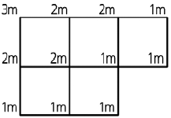
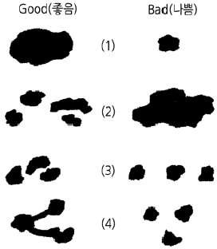
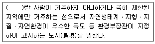
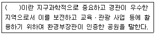

자연생태복원기사(구) (2013-06-02 기출문제)
1과목: 환경생태학개론
1. 다음 중 산성비의 원인이 되는 물질로만 구성된 것은?
- 탄산가스, 아황산가스
- 아황산가스, 질소산화물
- 염화수소, 황화수소
- 황산이온, 황화수소
(정답률: 79%)

2. 연못 바닥에서 퇴적물 분해에 기여하는 생물을 말하며 지렁이, 수생 곤충류 등이 중심인 생물의 종류는?
- 부유생물
- 부착생물
- 저서생물
- 대상생물
(정답률: 92%)
3. 수은(Hg)을 함유하는 폐수가 방류되어 오염된 바다에서 잡은 어패류를 섭취함으로서 발생하는 병은?
- 이따이이따이병
- 미나마따병
- 피부흑색병
- 골연화증
(정답률: 84%)
4. 1992년 6월 리우회의에서 158개국이 서명하였으며 열대림과 멸종되어가는 종을 보전하기 위한 협약은?
- 헬싱키협약
- 기후변화협약
- 생물다양성협약
- 비엔나협약
(정답률: 89%)
5. 간조와 만조 수위사이의 연안역은 생물학적 생산성이 높은 곳으로 연안관리에 중요한 대상지이다. 이곳의 명칭은?
- 연안구
- 원양구
- 조간대
- 심저대
(정답률: 67%)
6. 천이이론은 식물군집이 일정한 변화계열을 거치며 마지막에는 가장 안정한 극상군집이 된다는 가설이다. 이 가설에 따른 식물군집의 변화 과정으로 가장 옳은 것은?
- 산불 및 교란에 따른 황폐화 → 초본 → 덤불 또는 관목 → 교목 → 극상
- 산불 및 교란에 따른 황폐화 → 덤불 → 관목 → 초본 → 교목 → 극상
- 산불 및 교란에 따른 황폐화 → 덤불 → 초본과 관목 → 교목 → 극상
- 산불 및 교란에 따른 황폐화 → 관목과 교목 → 덤불 → 초본 → 극상
(정답률: 88%)
7. 다음 중 빈영양(oligotrophic)호수와 부영양(eutrophic) 호수의 일반적인 특성 설명으로 옳지 않은 것은?
- 일반적으로 부영양호수보다 빈영양호수의 수심이 얕다.
- 생산력은 빈영양호수보다 부영양호수에서 높게 나타난다.
- 부영양호수에서는 빈영양호수보다 조류 대발생이 자주 발생한다.
- 질소, 인 등의 영양물질 농도는 부영양호수에서 높은 수준을 보인다.
(정답률: 84%)
8. 생태계의 구성요소에서 생산자에 해당하지 않는 것은?
- 산림식물
- 초원식물
- 유기영양 미생물
- 식물플랑크톤
(정답률: 90%)
9. 중금속에 오염된 토양을 완전히 원래의 상태로 되돌리는 방법으로 택할 수 있는 것은?
- 흡착 또는 특이식물 재배
- 흙갈이 객토
- 갈아엎기
- 혼층갈이
(정답률: 74%)
10. 생태적 천이에 나타나는 특성으로 옳지 않은 것은?
- 성숙단계로 갈수록 순군집생산량이 낮다.
- 성숙단계로 갈수록 생물체의 크기가 크다.
- 성숙단계로 갈수록 생활사이클이 길고 복잡하다.
- 성숙단계로 갈수록 생태적 지위의 특수화가 넓다.
(정답률: 72%)
11. 다음 중 열대우림의 특징 설명으로 옳지 않은 것은?
- 종 다양성이 높다.
- 착생식물이 많다.
- 플라야 및 바야다가 발달한다.
- 지표에서 가장 변동이 적은 환경이다.
(정답률: 63%)
12. 온도에 대한 생물의 적응과 관련된 설명으로 옳지 않은 것은?
- 동물의 겨울잠은 변온동물에서만 있는 일이다.
- Allen의 법칙은 항온동물의 경우 추운 지방일수록 몸의 말단부가 작아진다는 것이다.
- Bergman의 법칙은 항온동물의 경우 동종 또는 가까운 종류에서는 남방보다는 북방에 서식하는 동물이 일반적으로 체중이 늘어나는 경향이 있다는 것이다.
- 낙엽수는 겨울의 저온시 잎을 떨어뜨려 추위를 견딘다.
(정답률: 89%)
13. 다음 열거된 환경 미생물 중에서 물에 냄새와 맛, 색도를 유발시킬 수 있는 미생물은?
- bacteria
- protozoa
- fungi
- algae
(정답률: 72%)
14. 도시림의 기능이나 효용에 관한 설명 중 가장 거리가 먼 것은?
- 방충적 효용
- 방음적 효용
- 방화적 효용
- 심리적 효용
(정답률: 82%)
15. 태양광 중 PAR(Photosynthetically Active Radiation)의 파장 영역은?
- X-선
- 자외선
- 가시광선
- 적외선
(정답률: 62%)
16. 갯벌이 가지는 자연환경자원으로서의 기능 중 옳지 않은 것은?
- 해수의 정화기능
- 바다새의 도래 등 생물서식 기능
- 자연친화적인 정서함양의 기능
- 산성 강화물을 제거하는 기능
(정답률: 80%)
17. 하천, 호수, 해양에 냉각수(온배수)가 유입되었을 때 나타나는 영향이 아닌 것은?
- 수중생물의 생리적, 유전적 손상을 준다.
- 수중생물의 산란유형을 변화시킬 수 있다.
- 수온상승으로 산소의 용해도가 증가한다.
- 병원성 세균이 더욱 활발해져 급격한 증식을 초래할 수 있다.
(정답률: 87%)
18. 인간 활동의 부산물로 배출되어 폐기되는 모든 형태의 물질을 폐기물이라 한다. 이들에 대한 설명으로 옳지 않은 것은?
- 해양에 투기되는 물질의 약 80~90%가 준설에 의한 폐기물이다.
- 병원성 세균은 해양에 유입된 후 대부분 곧 죽지만 경우에 따라서는 패류 등 저서생물에 의해 섭취되거나 중간숙주 생물에 의해 증식되기도 한다.
- 선박에 의한 해양오염방지 국제협약(MARPOL 1973/78)이 1988년 12월 발효되어 모든 플라스틱 제품, 어망, 봉지 등을 바다에 버리는 것을 금지하고 있다.
- 산업폐수의 처리과정에서 발생하는 부산물인 오니(sewage sludge)는 비료나 간척용으로 사용할 수 없다.
(정답률: 80%)
19. 독특한 식물들의 군집인 채퍼랠(Chaparral)의 특징이 아닌 것은?
- 아열대지방에서 성장 할 수 있는 활엽상록수로 구성되어 있다.
- 해안에만 분포되어 있다.
- 계절에 의한 변화가 특징이다.
- 생태학자들은 “불에 의해 형성된 아극상 군집”이라고 표현한다.
(정답률: 65%)
20. 개체군의 분산형태가 아닌 것은?
- 생물번식
- 유출
- 유입
- 회귀운동
(정답률: 55%)
2과목: 환경계획학
21. 계획의 기본이념은 지속 가능한 발전을 지향하는 것이고, 지속 가능한 발전을 실현하기 위한 방안은 크게 3가지로 요약할 수 있다. 다음 중 이에 가장 적합한 것은?
- 환경적 지속성, 생태적 지속성, 경제적 지속성
- 생태적 지속성, 경제적 지속성, 사회적 지속성
- 사회적 지속성, 환경적 지속성, 생태적 지속성
- 환경적 지속성, 경제적 지속성, 사회적 지속성
(정답률: 52%)
22. 다음 용도지구에 대한 설명 중 틀린 것은?
- 토지이용을 고도화하고 경관을 보호하기 위하여 건축물 높이의 최저한도를 정할 필요가 있는 지구를 최저고도지구라 한다.
- 환경시설ㆍ공용시설ㆍ항만 또는 공항의 보호, 업무기능의 효율화, 항공기의 안전운항 등을 위하여 지정하는 것은 개발진흥지구이다.
- 문화재와 문화적으로 보존가치가 큰 건축물 등의 미관을 유지ㆍ관리하기 위하여 필요한 것은 역사문화미관지구이다.
- 녹지지역ㆍ관리지역ㆍ농림지역 또는 자연환경보전지역안의 취락을 정비하기 위하여 필요한 지구는 자연취락지구이다.
(정답률: 80%)
23. 환경해설에 있어서 안내자 방식의 해설물 디자인의 원칙이 아닌 것은?
- 교재를 보고 이야기 한다.
- 관련성이 있어야 한다.
- 이해하기 쉬워야 한다.
- 명확한 주제를 제시하여야 한다.
(정답률: 72%)
24. 자연환경보전계획상 훼손지 복원의 추진 방향에 대한 설명으로 가장 거리가 먼 것은?
- 자연회복을 도와주도록 하여야 한다.
- 자연의 군락을 재생ㆍ창조하여야 한다.
- 자연에 가까운 방법으로 군락을 재생하여야 한다.
- 자연훼손지를 극상군락으로 복원하여야 한다.
(정답률: 58%)
25. 다음의 토지이용 형태 중 강우시 물질 유실량이 많아지는 순으로 배열된 것은?
- 습지＜숲＜밭＜목초지＜도시
- 숲＜습지＜목초지＜밭＜도시
- 숲＜목초지＜습지＜밭＜도시
- 습지＜숲＜목초지＜밭＜도시
(정답률: 59%)
26. 어메니티(amenity)의 일반적 개념으로 적합하지 않은 것은?
- 경제적 가치를 지니는 개념이다.
- 어메니티는 총체적인 환경의 질이다.
- 시간과 공간에 구애받지 않는 절대적 개념이다.
- 인간이 기분 좋다고 느끼는 물리적 환경의 상태이다.
(정답률: 74%)
27. 국토의 계획 및 이용에 관한 법률상 정의된 용어의 설명으로 옳은 것은?
- 토지의 이용 및 건축물의 용도ㆍ건폐율ㆍ용적률ㆍ높이 등에 대한 용도지역 및 용도지구의 제한을 강화하거나 완화하여 따로 정함으로써 시가지의 무질서한 확산방지, 계획적이고 단계적인 토지이용의 도모, 토지이용의 종합적 조정ㆍ관리 등을 위하여 도시ㆍ군관리계획으로 결정하는 지구를 용도지구라 한다.
- 개발로 인하여 기반시설이 부족할 것으로 예상되나 기반시설을 설치하기 곤란한 지역을 대상으로 건폐율이나 용적률을 강화하여 적용하기 위하여 관련 규정에 따라 지정하는 구역을 개발관리집중구역이라 한다.
- 토지의 이용 및 건축물의 용도, 건폐율, 용적률, 높이 등을 제한함으로써 토지를 경제적ㆍ효율적으로 이용하고 공공복리의 증진을 도모하기 위하여 서로 중복되지 아니하게 도시 ㆍ군관리계획으로 결정하는 지역을 용도지역이라 한다.
- 개발관리집중구역 외의 지역으로서 개발로 인하여 도로, 공원, 녹지 등 대통령령으로 정하는 기반시설의 설치가 필요한 지역을 대상으로 기반시설을 설치하거나 그에 필요한 용지를 확보하게 하기 위하여 관련 규정에 따라 지정 ㆍ고시하는 구역을 기반시설분담구역이라 한다.
(정답률: 57%)
28. 환경부장관은 자연환경을 체계적으로 보전하고 자연자산을 관리ㆍ활용하기 위하여 자연환경 또는 생태계에 미치는 영향이 현저하거나 생물다양성의 감소를 초래하는 사업을 하는 사업자에 대하여 생태계보전협력금을 부과ㆍ징수하는바, 최대 부과금액은 얼마까지 인가?
- 5억원
- 10억원
- 15억원
- 20억원
(정답률: 71%)
29. 자연환경보전법에 의하면 여러 조항에서 자연환경과 관련한 인력을 규정하고 있는바, 다음 중 법에 제시된 자연환경보전 관련 인력이 아닌 것은?
- 자연경관평가지도원
- 자연환경조사원
- 자연환경보전명예지도원
- 자연환경해설사
(정답률: 34%)
30. 다음 중 경관의 구조를 파악하는 요소가 아닌 것은?
- 조각의 크기
- 에너지의 흐름
- 경관요소의 수
- 경관요소의 모양
(정답률: 61%)
31. 하천의 주요기능으로 가장 거리가 먼 것은?
- 이수기능
- 위락기능
- 치수기능
- 환경기능
(정답률: 71%)
32. 생태네트워크 공간구성원리의 지역구분에 해당하지 않는 것은?
- 핵심지역
- 완충지역
- 코리도
- 특수지역
(정답률: 74%)
33. 일정한 지역안에서 환경의 질을 유지하고 환경오염 또는 환경훼손에 대하여 환경이 스스로 수용ㆍ정화 및 복원 할 수 있는 한계를 말하는 것은?
- 환경용량
- 환경훼손
- 환경오염
- 환경파괴
(정답률: 84%)
34. 다음 중 국토의 계획 및 이용에 관한 법률 체계상 가장 하위에 해당하는 계획은?
- 도시ㆍ군기본계획
- 광역도시계획
- 지구단위계획
- 도시ㆍ군관리계획
(정답률: 72%)
35. 다음 중 환경계획의 접근방법에 가장 부합되는 것은?
- 개발가능지 확보를 위한 계획적 접근시도
- 경사, 표고, 경관, 수문분석 등 주로 물리적환경 위주의 대상지 분석
- 해당지역과 주변지역을 포함한 유역권 전체에 대한 조사 및 분석
- 개발의 결과로 제기되는 환경오염의 사후처리에 대한 내용에 비중
(정답률: 64%)
36. 다음 중 생물 다양성의 유지ㆍ복원을 위한 환경계획으로 틀린 것은?
- 인간의 이용을 중심으로 하는 구역과 자연지역을 구분없이 계획해야 한다.
- 생물 다양성의 유지ㆍ복원을 위해 일정 수준 이상의 수평공간이 확보되어야 한다.
- 자연지역을 가능한 한 크게 만들고 통로를 설치하여 생물적 네트워크를 확보하는 것이 중요하다.
- 자연지역과 인위지역 사이에 완충지역을 배치한다.
(정답률: 77%)
37. 우리나라 “지방의제21”의 성격으로 옳지 않은 것은?
- NGO중심의 파트너쉽에 기초한 녹색거버넌스
- 기초단위의 시민운동이자 녹색공동체
- 전국 네트워크 체계 연대조직
- 지방분권화 시대의 하향식 계획 및 실천수단
(정답률: 64%)
38. 도시의 열섬을 저감하는 방법으로 가장 부적합한 것은?
- 옥상정원 및 벽면녹화 조성
- 도시내 바람이 흐를 수 있는 바람길 조성
- 도시내 녹지면적의 확대 조성
- 도시내 포장면적 확대
(정답률: 78%)
39. 환경위기의식은 1987년 브룬트란드 보고서를 통해서 환경적으로 건전하고 지속가능발전(ESSD; Environmentally Sound and Sustainable Development)이라는 개념으로 정리되었다. 이 보고서의 ESSD 개념으로 볼 수 없는 것은?
- 세대간의 형평성
- 국민소득 증대
- 생태적 수용력 한계 내에서의 개발
- 사회 정의적 관점에서의 개발
(정답률: 63%)
40. 생태 네트워크 계획시 고려해야 할 주요 내용과 거리가 먼 것은?
- 생물의 생식ㆍ생육공간이 되는 녹지의 확보
- 생물의 생식ㆍ생육공간이 되는 녹지의 생태적 기능의 향상
- 인간성 회복의 장이 되는 녹지의 확보
- 사회적 편익을 위한 녹지의 확보
(정답률: 75%)
3과목: 생태복원공학
41. 생태계 내에 있는 모든 생물체는 서로 상호작용을 하고 있다. 두 개체군 서로에게 이익이 되는 관례를 말한 것은?
- 기생
- 착생
- 공생
- 경쟁
(정답률: 81%)
42. 생태통로 조성방법 중 부적합한 것은?
- 동물유도를 위해 입구에 식생을 조성한다.
- 소형동물의 이동통로는 원형관 또는 생태관(eco-pipe)등 단순구조로 계획한다.
- 육교형 생태통로 내 식재지에서의 토심은 아교목과 관목의 안정적인 성장을 고려하여 30㎝ 정도를 확보한다.
- 하부형 생태통로 중 양서ㆍ파충류용 암거는 이동성을 확보하기 위한 구조로 0.5~1m 폭으로 조성하며, 배수구조물과 함께 조성한다.
(정답률: 47%)
43. 다음 지역을 구형분할(矩形分割)법을 이용하여 체적(m3)을 구하면 얼마인가?(단, 정사각형의 한변의 길이는 10m이다.)

- 400m3
- 500m3
- 600m3
- 800m3
(정답률: 60%)
44. 다음 중 도시지역에서 생물다양성의 증진을 목표로 계획되는 공원은?
- 근린공원
- 자연공원
- 생태공원
- 국립공원
(정답률: 74%)
45. 물 순환체계의 특징을 설명한 것 중 옳지 않은 것은?
- 도심지역은 불투수성 표면의 증가로 물 부족 현상이 심화되고 있다.
- 수목이 증가하면 증산작용으로 미세기후가 변하며, 미세온도, 습도 등에 영향을 주는 효과가 있다.
- 지표수의 빠른 유출은 물이용에 차질을 가져오며, 수변생태계를 파괴할 가능성이 높다.
- 빗물의 신속한 배수는 하천의 오염물질을 일시에 제거하여 도심의 하천 수질향상에 도움이 된다.
(정답률: 68%)
46. 벽면녹화에 사용되는 식물 중 흡착형 식물이 아닌 것은?
- 담쟁이덩굴
- 마삭줄
- 맥문동
- 줄사철나무
(정답률: 66%)
47. 다음 중 3단계 습지 시스템구조를 가장 잘 나타낸 것은?
- 오염물질의 유입 → 침전습지 → 오염물질 정화 습지 → 생물다양성 향상 습지
- 오염물질의 유입 → 오염물질 정화 습지 → 침전습지 → 생물다양성 향상 습지
- 오염물질의 유입 → 생물다양성 향상 습지 → 침전습지 → 오염물질 정화 습지
- 오염물질의 유입 → 침전습지 → 생물다양성 향상 습지 → 오염물질 정화 습지
(정답률: 74%)
48. 다음 무기양료 중 토양 내에서 이동이 쉬운 것은?
- 질소(N)
- 인(P)
- 황(S)
- 칼슘(Ca)
(정답률: 67%)
49. 다음 중 콘크리트를 만들 때 사용되는 혼화 재료들에 대한 설명으로 가장 거리가 먼 것은?
- AE제 : 콘크리트의 미세한 독립 공기포를 골고루 분산시키기 위해 사용하는 혼화제
- 촉진제 : 시멘트의 응결 및 경화를 염류에 의해 촉진 또는 지연시키는 혼화제
- 감수제 : 콘크리트의 응결 및 초기경화를 지연시킬 목적으로 사용하는 혼화제
- 플라이애시(fly-ash) : 워커빌리티의 향상과 수화열 감소 및 건조수축의 방지를 위해 사용하는 혼화재
(정답률: 54%)
50. 훼손지 유형 중 연암 및 풍화암반에 적용할 녹화공법으로 적절하다고 볼 수 없는 것은?
- 주입객토공법
- 지오웨브공법
- 식구공법
- 구절객토공법
(정답률: 64%)
51. 잠재자연식생에 대한 설명으로 틀린 것은?
- 현존식생에 가해지는 인위성을 제거했을 경우 예상되는 자연식생의 모습이다.
- 극상이 되기 이전단계의 식생구조를 의미한다.
- 현 시점에서의 토지에 대한 잠재적인 능력을 추정한다.
- 대상식생과 자연식생의 종조성 등의 비교에 의해 추정한다.
(정답률: 72%)
52. 토양의 삼상분포 중의 하나인 고상율이 어느 정도 이상일 때 생육불량현상이 현저히 나타난다고 볼 수 있는가? (단, 기상율은 10% 이하 이다.)
- 30%
- 40%
- 50%
- 60%
(정답률: 46%)
53. 다음 재료 중 할증률이 가장 높은 것은?
- 잔디
- 원석(마름돌용)
- 목재
- 조경수목
(정답률: 68%)
54. 도시의 생물다양성 보전을 위해 고려해야 할 사항으로 부적합한 것은?
- 생물 개개의 서식처 보전만으로 다양성을 유지할 수 없으므로 서식공간의 네트워크가 필요하다.
- 개개의 생물종 보전대책이 종의 장기적인 생존을 위해 최우선적으로 고려되어야 한다.
- 미래의 생물서식환경과 종의 생존을 위해 넓은 범위에서의 대책이 시급하다.
- 서식지 규모의 단편화, 축소화, 질적 악화를 방지하기 위해서는 서식환경 전체를 대상으로 하는 대책이 필요하다.
(정답률: 65%)
55. 다음 중 생태계의 생태적 원리로 가장 거리가 먼 것은?
- 순화성
- 주관성
- 다양성
- 안정성
(정답률: 80%)
56. 소하천에서 어류의 자유로운 계류 통행을 위해서 피해야하는 것은?
- 계류에 낙차를 크게 둔다.
- 바닥에 돌이 있다.
- 잡초가 많다.
- 나무로 그늘지게 한다.
(정답률: 70%)
57. 황폐한 산간계곡의 유역면적 10㏊인 곳에서 강우강도가 100㎜/hr 일 때, 최대유량은 약 얼마인가?(단, 유역의 유출계수는 0.8 이다.)
- 0.1m3/s
- 0.2m3/s
- 2.2m3/s
- 4.4m3/s
(정답률: 58%)
58. 일반적으로 인산이 토양 중에 과다하게 있을 경우 다음 중 식물에 결핍되기 쉬운 성분은?
- 철
- 마그네슘
- 아연
- 칼륨
(정답률: 66%)
59. 다음 중 옥상을 이용한 생물서식공간화 조성 목적 및 효과로 적합하지 못한 것은?
- 세덤류 등 야생초화류 위주로 조성한다.
- 옥상공간이 환경교육 장소로 이용될 수 있다.
- 빗물의 급격한 유출을 막을 수 있다.
- 방수층 열화방지 효과가 있어 건물보호 효과를 기대할 수 있다.
(정답률: 75%)
60. 생태계의 보전 및 복원에 있어서 목표가 되는 종군의 유형을 잘못 설명한 것은?
- 중추종(keystone species) : 생물군집에 있어서 생물간 상호작용의 필요가 있고, 그 종이 사라지면 생태계가 변질된다고 생각하는 종
- 우산종(umbrella species) : 영양단계의 최상위에 위치하는 종으로, 이 생물종을 지키면 많은 종의 생존이 확보된다고 생각되는 종
- 깃대종(flagship species) : 생물종의 아름다움이나 매력에 의해 일반 사람들에게 서식처의 보호를 호소하는데에 효과적인 종
- 희소종(threatened species) : 유사한 서식지나 환경조건에 발생하는 군락을 대표하는 종
(정답률: 64%)
4과목: 경관생태학
61. 경관생태학에서 섬의 면적과 종의 수를 설명하는 이론은?
- 성생물지리 이론
- 열역학 이론
- 엔트로피 이론
- 가이아 이론
(정답률: 72%)
62. 야생조류를 보호하기 위해서 영국의 자연보전국에서 설정한 자연보호지구(NNR; National Nature Reserves)의 설명으로 틀린 것은?
- 자원의 보전 및 관리를 목적으로 한다.
- 조사, 연구, 실험, 교육 및 즐거움을 위한 공간을 제공한다.
- 지속적으로 자연환경의 변화를 모니터링 할 수 있는 장소가 되어야 한다.
- 야생동물을 보호하기 위해서는 실용적 관점보다 이론적 관점에 치중해야 한다.
(정답률: 83%)
63. 서식처의 파편화는 개체군에 다양한 영향을 미친다. 다음 중 파편화의 영향으로 적절하지 않은 것은?
- 초기 배제효과
- 혼잡효과
- 종다양성 회복효과
- 장벽과 격리화
(정답률: 71%)
64. 경관생태학은 1950년대까지 초기 단계는 자연사와 물리적 환경단계, 제 2단계는 1950년대부터 1980년대까지로 조직단계(다양한 분야의 결합)였다. 1980년대 이후 제 3의 단계는 무엇으로 표현할 수 있는가?
- 컴퓨터모델(시뮬레이션 단계)
- 분자생물생태적 접근 단계(바이오테크놀러지)
- 토지모자이크(일체화 단계)
- 지속가능개발개념(보존 및 개발공존 단계)
(정답률: 36%)
65. 도시생물지리학을 응용한 서식처 조성의 원칙 중 잘못 연결된 것은?

- (1)
- (2)
- (3)
- (4)
(정답률: 78%)
66. 환경영향평가 기법에서 중점 평가 인자 선정기법과 관계가 없는 것은?
- 체크리스트법
- 네트워크법
- 격자분석법
- 지도중첩법
(정답률: 62%)
67. 우리나라의 산림토양과 산림습지, 산림동물상의 분포에 관한 설명으로 옳지 않은 것은?
- 기온차가 심하고 지형과 지질이 복잡하여 산림토양도 대단히 복잡하다.
- 포유류는 워낙 분포영역이 넓고 한반도는 동물지리구상 구부구(palaearctic region)에 속한다.
- 조류는 생물지리적 분포상 중국아구 속에 자리하고 백두산 고준지대와 한국저지소구로 구분한다.
- 여름새로는 독수리, 양진이, 백로 등이 대표적이며 겨울새로는 호반새, 쏙독새 등이 있다.
(정답률: 61%)
68. 토지 모자이크의 구성요소가 아닌 것은?
- 조각(patch)
- 통로(corridor)
- 바탕(matrix)
- 비오톱(biotope)
(정답률: 78%)
69. 해안경관 중 갯벌의 종류에 따라 서식하는 종이 달라진다. 펄 갯벌에서의 우점종으로 관찰되는 것은?
- 바지락
- 가무락
- 갯지렁이
- 갯고둥
(정답률: 63%)
70. GIS로 파악이 가능한 자연환경정보의 내용으로 볼 수 없는 것은?
- 토지 피복
- 지표면의 온도
- 식물군락유형구분
- 대기오염물질의 종류
(정답률: 81%)
71. 옥상녹화의 필요성으로 알맞지 않은 것은?
- 대기정화
- 매트릭스 코리더 형성
- 도시 홍수 예방
- 건축물의 냉난방 에너지 절약효과
(정답률: 59%)
72. 경관생태학에서 사용하는 생태계의 공간정보에 직접 필요한 도구가 아닌 것은?
- 원격탐사
- 토양유기물분석시스템
- 지리정보시스템
- 항공사진
(정답률: 69%)
73. 다음 중 경관생태학이라는 용어를 최초로 사용한 사람은?
- Troll
- Forman
- Zonneveld
- Harber
(정답률: 80%)
74. 다음 중 종 - 면적 관계식(S = cAz)에 대한 설명으로 맞는 것은?
- A는 종다양성을 나타낸다.
- 면적과 종수의 관계 그래프는 직선으로 나타난다.
- 다양한 군집안에서 채집 된 표본수와 종의 수를 이용하였다.
- c값은 연구지의 특성에 따라 다르다.
(정답률: 74%)
75. 생물보전지구의 크기와 수를 결정할 때 고려되어야 할 사항 중의 하나로 볼 수 있는 것은?
- 여러 개의 작은 패치보다는 적은 수의 큰 패치가 개체군을 유지하는데 유리하다.
- 적은 수의 큰 패치보다는 여러 개의 작은 패치가 개체군을 유지하는데 유리하다.
- 생물의 서식처로서 숲 패치는 항상 동질적인 비역동성을 유지하는 동일한 면적이어야 한다.
- 최소존속개체군이 유지되기 위해서는 경관패치의 크기보다는 패치들 간의 연결성이 더 중요하다.
(정답률: 70%)
76. 백두대간의 경관생태와 그 가치에 대한 설명으로 옳지 않은 것은?
- 고산과 아고산 산지는 생태적으로 매우 안정한 생태계와 경관을 이루고 있다.
- 다양한 생물 상을 포함하는 특징적 경관을 발달시켜 왔다.
- 빙하기와 간빙기가 교차할 때마다 동ㆍ식물의 이동 통로 혹은 피난처로 이용되어 왔다.
- 많은 하천의 발원지이자 가장 한국적인 자연경관이다.
(정답률: 56%)
77. 둘레의 길이가 6313.307m, 그 면적이 57335.166m2 인 경관조각의 프렉탈 차원(D)을 둘레/면적법으로 구하면 어느 범위에 속하는가?
- 3~4
- 2~3
- 1~2
- 0~1
(정답률: 52%)
78. 다음 중 경관식생도에 해당하는 내용이 아닌 것은?
- 지형정보
- 식생정보
- 서식처 정보
- 토지이용정보
(정답률: 40%)
79. 자연상태에서 인위적이거나 자연적 간섭 작용으로 군집의 속성이 단순하고 획일화되는 변화는?
- 순환적 천이
- 진행적 천이
- 퇴행적 천이
- 타발적 천이
(정답률: 56%)
80. 원격탐사기법의 특징에 해당되지 않는 것은?
- 컴퓨터를 이용하여 손쉽게 분석할 수 있음
- 광범위한 지역의 공간정보를 획득하기에 용이한
- 시각적으로 표현하여 지도의 형태로 제공해 줌으로써 누구나 용이하게 이해함
- 정밀한 땅속 지하 암반의 형태를 쉽게 추출할 수 있음
(정답률: 71%)
5과목: 자연환경관계법규
81. 국토의 계획 및 이용에 관한 법률에 의해 개발행위허가를 신청할 때 첨부하여야 할 계획서의 내용에 해당하지 않는 것은?
- 기반시설의 설치 또는 그에 필요한 용지의 확보 계획
- 경관 및 조경에 관한 계획
- 개발 이익 환원에 관한 계획
- 위해방지 및 환경오염방지 계획
(정답률: 69%)
82. 야생생물 보호 및 관리에 관한 법률 시행규칙상 멸종위기 야생생물Ⅰ급(조류)에 해당하는 것은?
- 고니 Cygnus columbianus
- 흑고니 Cygnus olor
- 검은머리갈매기 Larus saundersi
- 독수리 Aerypius monachus
(정답률: 52%)
83. 산지관리법상 산림청장등은 산지전용허가ㆍ산지일시사용허가 등을 받은 자에게 업무에 관한 사항을 보고하게하거나 관련 자료의 제출 및 현지조사를 요구할 수 있는데, 이를 위반하여 업무보고 및 자료제출이나 현지조사를 거부ㆍ방해 또는 기피한 자에 대한 과태료 부과기준으로 옳은 것은?
- 2천만원 이하의 과태료를 부과한다.
- 1천만원 이하의 과태료를 부과한다.
- 5백만원 이하의 과태료를 부과한다.
- 2백만원 이하의 과태료를 부과한다.
(정답률: 64%)
84. 백두대간 보호에 관한 법률상 백두대간 보호지역을 지정ㆍ고시하는 행정기관장은?
- 국토교통부장관
- 환경부장관
- 산림청장
- 국립공원관리공단 이사장
(정답률: 72%)
85. 독도 등 도서지역의 생태계 보전에 관한 특별법상 용어의 정의이다. ( )안에 알맞은 것은?

- 특별보호도서
- 특정도서
- 생태보호도서
- 생태경관보호도서
(정답률: 50%)
86. 독도 등 도서지역의 생태계 보전에 관한 특별법상 환경부장관이 특정도서의 자연생태계 보전을 위하여 토지 등을 매수하는 경우 토지매수가격은 어느 법에 의해 산정하는가?
- 공유토지 분할에 관한 특례법
- 공익사업을 위한 토지 등의 취득 및 보상에 관한 법률
- 국토의 계획 및 이용에 관한 법률
- 지가공시 및 토지 등의 평가에 관한 법률
(정답률: 70%)
87. 습지보전법상 습지보전기본계획에 포함되어야 할 사항이 아닌 것은? (단, 기타사항 등은 제외)
- 습지보호지역 지정에 관한 계획
- 습지조사에 관한 사항
- 습지보전을 위한 국제협력에 관한 사항
- 습지의 분포 및 면적과 생물다양성의 현황에 관한 사항
(정답률: 38%)
88. 국토기본법상 국토계획의 정의 및 구분기준에서 “국토전역을 대상으로 하여 특정부문에 대한 장기적인 발전방향을 제시하는 계획”을 의미하는 것은?
- 국토종합계획
- 부문별계획
- 도종합계획
- 지역계획
(정답률: 50%)
89. 다음은 자연공원법상 용어의 뜻이다. ( )안에 적합한 것은?

- 지질공원
- 역사공원
- 자연휴양림공원
- 테마공원
(정답률: 80%)
90. 국토의 계획 및 이용에 관한 법률 시행령상 기반시설 중 광장 구분기준에 해당하지 않는 것은?
- 교통광장
- 일반광장
- 특수광장
- 건축물부설광장
(정답률: 60%)
91. 자연환경보전법상 전이구역안에서 토지의 형질변경을 행하여 자연생태ㆍ자연경관을 훼손시킨 자에 대한 벌칙기준으로 옳은 것은?
- 5년 이하의 징역 또는 3천만원 이하의 벌금에 처한다.
- 3년 이하의 징역 또는 2천만원 이하의 벌금에 처한다.
- 2년 이하의 징역 또는 1천만원 이하의 벌금에 처한다.
- 1년 이하의 징역 또는 5백만원 이하의 벌금에 처한다.
(정답률: 39%)
92. 환경정책기본법령상 NO2의 대기환경기준치 ( ① ) 및 측정방법 ( ② )으로 옳은 것은?(단, 기준치는 1시간 평균치 기준)
- ① 0.03ppm 이하
② 자외선형광법(Pulse U.V. Fluorescence Method) - ① 0.10ppm 이하
② 화학발광법(Chemiluminescent Method) - ① 0.03ppm 이하
② 화학발광법(Chemiluminescent Method) - ① 0.10ppm 이하
② 자외선형광법(Pulse U.V. Fluorescence Method)
(정답률: 50%)
93. 환경정책기본법령상 중앙정책위원회의 원활한 운영을 위하여 환경정책ㆍ자연환경ㆍ기후대기ㆍ물ㆍ상하수도ㆍ자원순환 등 환경관리 부분별로 부분과위원회를 둘 수 있는데, 그 분과 위원회의 구성으로 옳은 것은?
- 분과위원장을 1명을 포함한 10명 이내의 위원으로 구성한다.
- 분과위원장을 1명을 포함한 15명 이내의 위원으로 구성한다.
- 분과위원장을 1명을 포함한 20명 이내의 위원으로 구성한다.
- 분과위원장을 1명을 포함한 25명 이내의 위원으로 구성한다.
(정답률: 50%)
94. 자연공원법령상 자연공원의 자연자원조사는 특별한 경우를 제외하고 얼마마다 실시하여야 하는가?
- 3년
- 5년
- 10년
- 15년
(정답률: 37%)
95. 자연공원법상 자연공원의 정의에 포함되지 않는 것은?
- 국립공원
- 도립공원
- 사설공원
- 군립공원
(정답률: 75%)
96. 농지법상 농지에 해당하는 것은?
- 초지법에 의하여 조성된 토지
- 실제 토지현상이 일년성 식물재배지
- 배수장 수로 등 농지 개량시설 부지
- 농산물유통에 직접 사용되는 부지
(정답률: 52%)
97. 국토의 계획 및 이용에 관한 법률상 토지의 이용실태 및 특성, 장래의 토지이용 방향 등을 고려하여 구분한 용도지역으로 옳지 않은 것은?
- 도시지역
- 생산지역
- 관리지역
- 자연환경보전지역
(정답률: 60%)
98. 환경정책기본법령상 하천의 수질 및 수생태계 환경기준 중 6가 크롬(Cr6+)의 기준값(㎎/L)으로 옳은 것은?(단, 사람의 건강보호 기준)
- 검출되어서는 안 됨(검출한계 0.001)
- 검출되어서는 안 됨(검출한계 0.01)
- 0.02 이하
- 0.⑤ 이하
(정답률: 56%)
99. 야생생물 보호 및 관리에 관한 법률 시행규칙상 멸종위기 야생생물 Ⅱ급(해조류)에 해당하는 것은?
- 만년콩 Euchresta japonica
- 삼나무말 Coccophora langsdorfii
- 한란 Cymbidium kanran
- 암매 Diapensia lapponica var. obovata
(정답률: 52%)
100. 자연환경보전법규상 위임업무 보고사항 중 “생태마을의 지정 및 해제 실적” 보고회수의 기준으로 각각 옳은 것은?
- 지정 : 연 4회, 해제 : 연 2회
- 지정 : 연 4회, 해제 : 수시
- 지정 : 연 1회, 해제 : 연 2회
- 지정 : 연 1회, 해제 : 수시
(정답률: 77%)